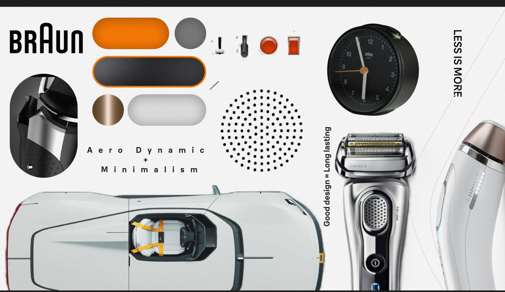
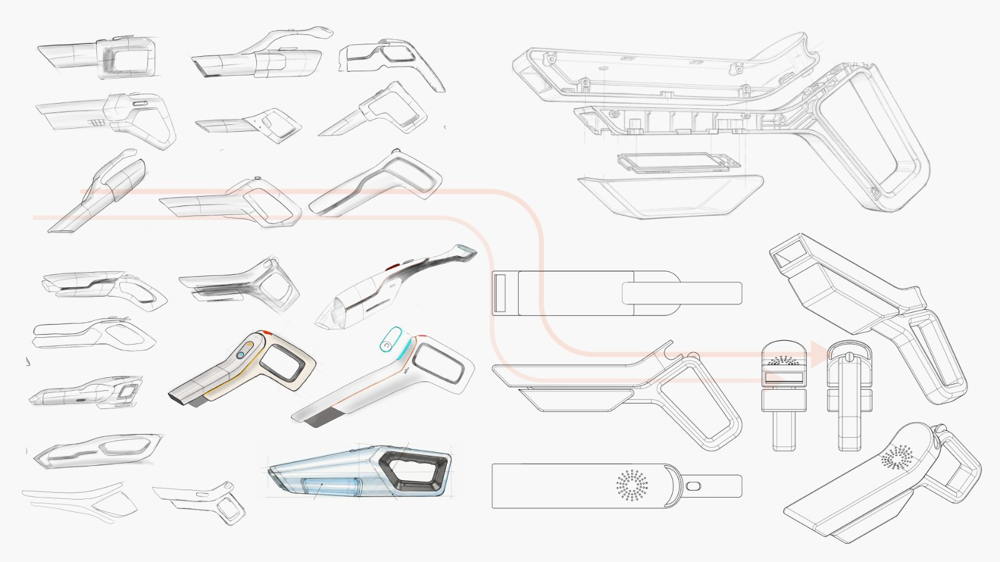
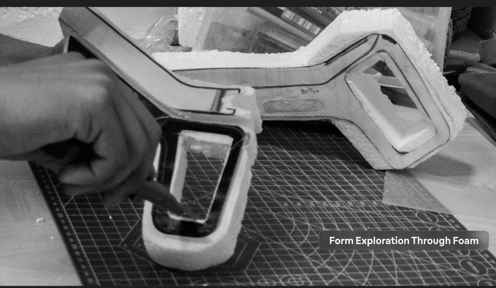
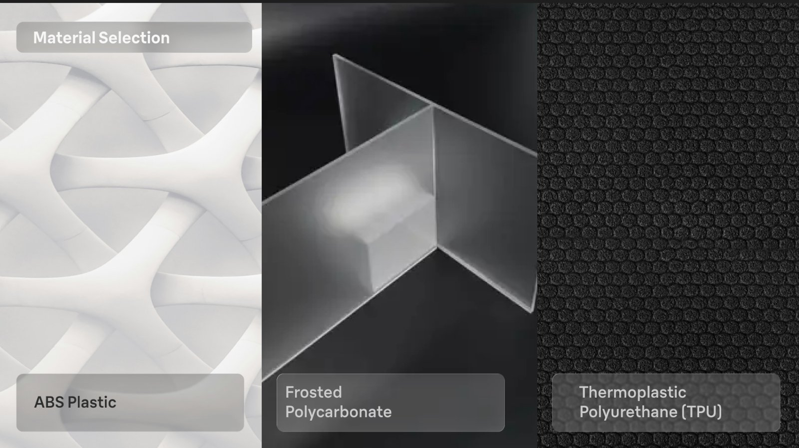
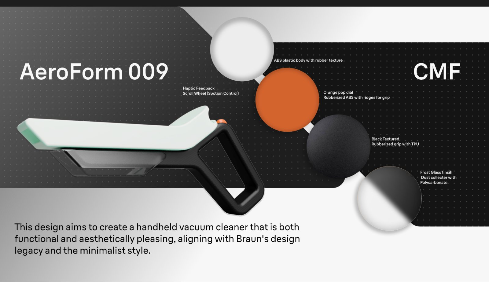
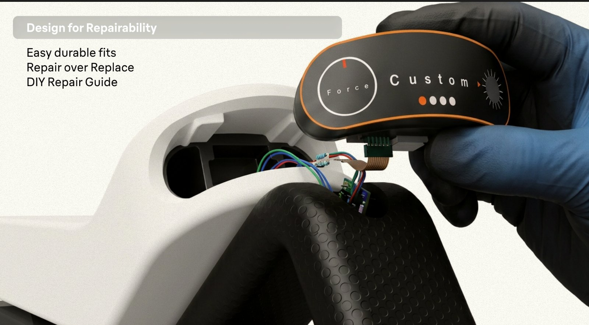
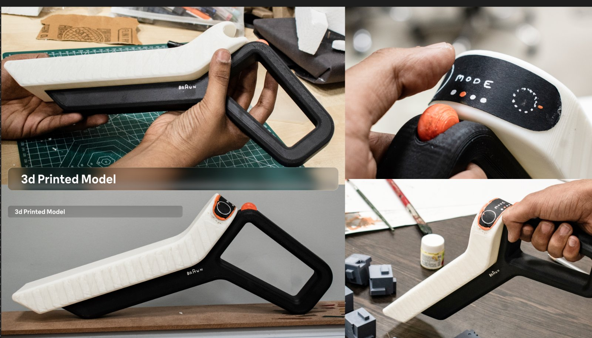
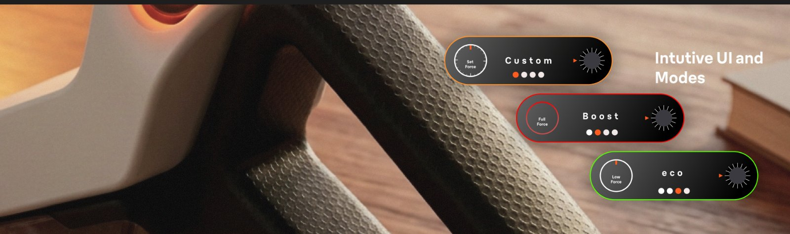
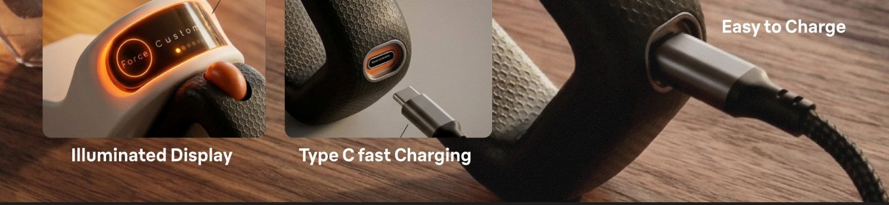
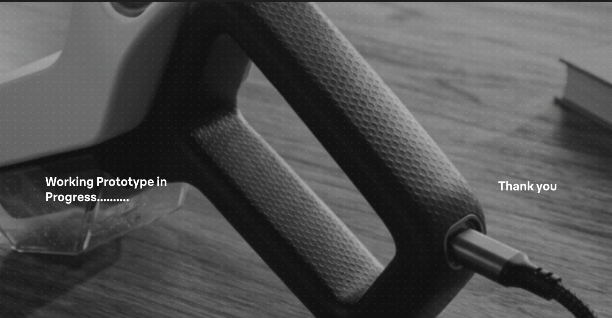

Form design · CMF · Product
AeroForm 009
Hand held vacuum cleaner
Objective
To design a modern hand held vacuum cleaner for Braun.
The process
- Setting the moodboard
- Form exploration
- CMF
- 3D printed model
Setting the moodboard
Braun’s own language first: aerodynamic minimalism, less is more, built to last. Orange, graphite, bronze and off white carried straight through.

Form exploration
Dozens of silhouettes narrowed to one: a flat, wing like body over an open loop handle.


Material selection
Three materials, each chosen for its job: hold the form, show the dirt, take the hand.

body
ABS with a rubber texture
grip
Black textured TPU
dial
Orange rubberised ABS, ridged, with a haptic scroll wheel
collector
Frosted polycarbonate
Colour, material, finish
One orange, used only where the hand goes.

Colour options
Eight finishes on the production form.
Design for repairability
The control pod lifts out on a ribbon connector instead of being bonded in.

3D printed model
Printed and painted in two parts, with the screen and dial mocked up to check them in the hand.

Intuitive UI and modes
Suction is a scroll wheel, not a row of buttons: Custom, Boost and eco, each with its own colour.


